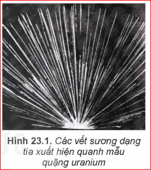
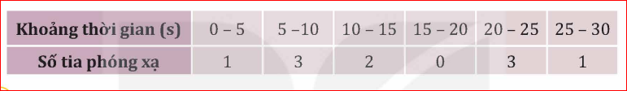
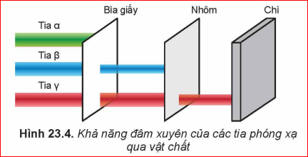
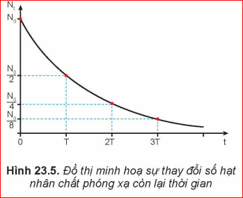
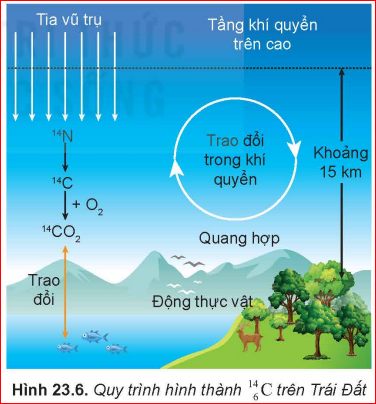
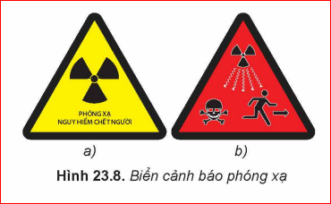
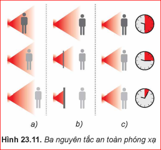

"Khi gói miếng kim loại hình chữ thập cùng một hòn đá có chứa uranium bằng tấm phim và để trong bóng tối vài ngày, Becquerel đã phát hiện trên tấm phim có vết sáng giống dấu chữ thập. Nguyên nhân nào gây tác dụng lên phim dù nó được để trong bóng tối?"
Thí nghiệm: Sử dụng buồng sương để quan sát vết quỹ đạo của các tia phát ra từ mẫu uranium.

Định nghĩa: Hiện tượng một hạt nhân không bền vững tự phát biến đổi thành một hạt nhân khác đồng thời phát ra tia phóng xạ gọi là hiện tượng phóng xạ.
Thảo luận:

Thí nghiệm cho thấy không thể dự đoán chính xác thời điểm một hạt nhân cụ thể sẽ phân rã.
| Thời gian | Số hạt còn lại |
|---|---|
| 0 | N₀ |
| T | N₀/2 |
| 2T | N₀/4 |
Kết luận: Quá trình phóng xạ mang tính chất ngẫu nhiên và thống kê.Sau mỗi chu kỳ T thì số hạt nhân giảm một nữa
Phương trình tổng quát: \(_{Z}^{A}X \rightarrow _{Z-2}^{A-4}Y + _{2}^{4}He\)

1. Tại sao tia \(\alpha\) có khả năng ion hóa mạnh?
2. Viết phương trình phân rã \(\alpha\) của \(_{92}^{238}U\)?
Có hai loại phóng xạ beta:
Đặc điểm: Tốc độ xấp xỉ tốc độ ánh sáng, đâm xuyên mạnh hơn tia \(\alpha\).
Hạt neutrino (\(\nu\)): Hạt không điện tích, khối lượng nghỉ rất nhỏ, chuyển động với tốc độ xấp xỉ ánh sáng.
1. Tia \(\beta^-\) là dòng các hạt nào?
2. So sánh khả năng đâm xuyên của \(\beta\) và \(\alpha\)?
Hạt nhân ở trạng thái kích thích chuyển về mức năng lượng thấp hơn: \(_{Z}^{A}X^* \rightarrow _{Z}^{A}X + \gamma\)
Đặc điểm: Là sóng điện từ bước sóng cực ngắn (\(< 10^{-11}\) m), không làm biến đổi số khối hay điện tích, đâm xuyên cực mạnh (qua được lớp chì dày).
1. Tia \(\gamma\) có bị lệch trong điện trường không?
2. Nêu ứng dụng của tia \(\gamma\) trong y học?
a) Phát biểu: Trong quá trình phân rã, số hạt nhân chưa bị phân rã giảm dần theo hàm số mũ theo thời gian.

| Chất phóng xạ | Chu kỳ bán rã (T) |
|---|---|
| Poloni \(_{84}^{212}Po\) | \(3.10^{-7}\) s |
| Radon \(_{86}^{222}Rn\) | 3,8 ngày |
| Urani \(_{92}^{238}U\) | \(4,5.10^9\) năm |
a) Định nghĩa: Đặc trưng cho tính phóng xạ mạnh hay yếu của mẫu chất, bằng số hạt nhân phân rã trong 1 giây.
b) Công thức: \(H_t = \lambda N_t = H_0 . e^{-\lambda t}\)
Đơn vị: Becquerel (Bq) hoặc Curi (Ci). \(1 \text{ Ci} = 3,7.10^{10} \text{ Bq}\).
Tính số hạt nhân bị phân rã sau thời gian \(t = 2T\)?
Đồng vị Carbon \(^{14} C\), đồng hồ của Trái Đất


[Hình: Biển báo nguy hiểm phóng xạ]
Mục đích: Cảnh báo khu vực có nguồn phóng xạ để con người tránh xa hoặc sử dụng đồ bảo hộ.

Đơn vị Becquerel đặt theo tên Henri Becquerel - người phát hiện ra phóng xạ năm 1896.
Định nghĩa phóng xạ, đặc điểm các loại tia, định luật và công thức độ phóng xạ.
Giải thích cơ chế hoạt động của máy dò khói hoặc máy đo tuổi cổ vật bằng C-14.
[Biết] Câu 1: Tia nào sau đây không mang điện tích?
[Biết] Câu 2: Đơn vị của độ phóng xạ là gì?
[Hiểu] Câu 3: Sau 2 chu kỳ bán rã, lượng chất phóng xạ còn lại bao nhiêu?
[Hiểu] Câu 4: Bản chất của tia \(\alpha\) là gì?
[Hiểu] Câu 5: Công thức liên hệ giữa hằng số phóng xạ và chu kỳ bán rã?
Bài 1: Một mẫu phóng xạ có \(10^{10}\) hạt nhân. Sau 12 giờ, số hạt còn lại là \(2,5.10^9\). Tính chu kỳ bán rã của chất này?
Bài 2: Tính độ phóng xạ của 1 gram \(_{88}^{226}Ra\) biết chu kỳ bán rã là 1600 năm?
Bài 3: Tại sao trong các vụ tai nạn hạt nhân, người ta thường phát thuốc Iod (I-131) cho người dân xung quanh?